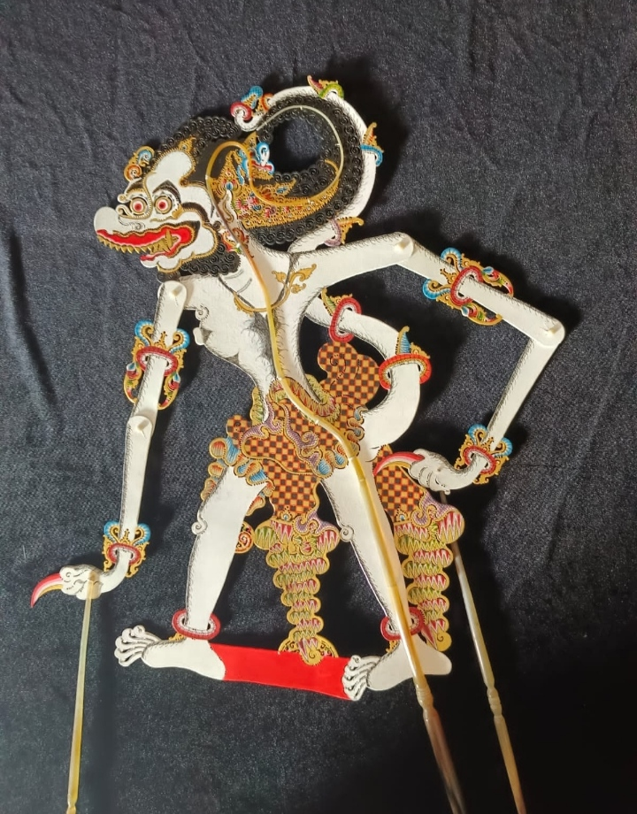
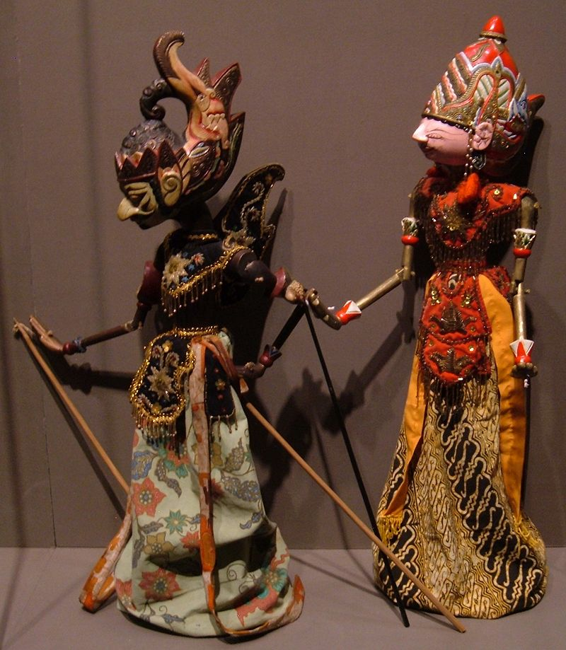
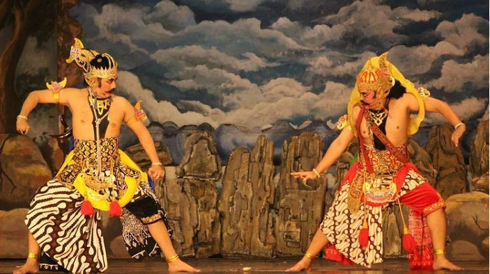
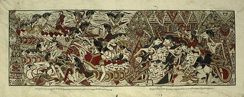
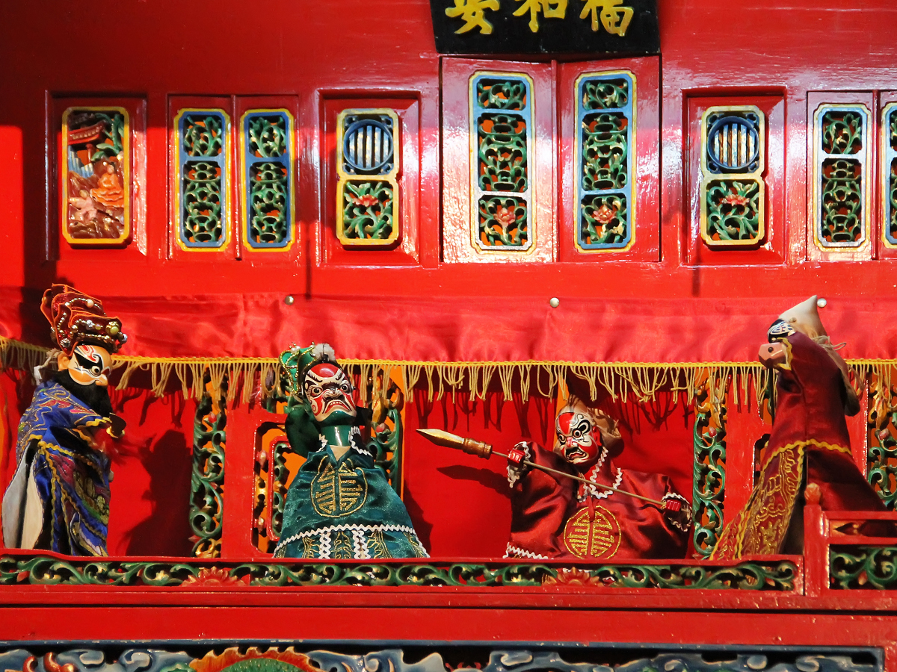

Sejarah Wayang Kulit

Wayang kulit memiliki sejarah yang panjang. Kesenian ini sudah ada sejak kerajaan Hindu Buddha Wayang juga di gunakan oleh para ulama untuk menyebarkan agama Islam di Nusantara. Salah satunya adalah sunan Kalijaga. Beliau menyebarkan agama Islam menggunakan metode pertunjukan kesenian wayang kulit.
Bagi orang Jawa khususnya untuk dapat menyaksikan pagelaran ini biasanya pada saat acara tertentu. Misalnya, pada saat sedekah bumi atau apitan dan pernikahan. Apitan adalah acara tahunan yang di selenggarakan oleh suatu desa dengan maksud untuk sedekah bumi.
Selain itu, pertunjukan wayang juga dapat di jumpai saat ruwatan. Yaitu, proses penyucian dalam mengatasi atau menghindarkan sesuatu kesulitan batin dengan jalan mengadakan pementasan wayang kulit.
Lalu, pembuatan wayang kulit biasanya terbuat dari kulit kerbau atau sapi. Hingga saat ini dapat di bilang kulit kerbau menjadi pilihan dalam proses pembuatan wayang.
Dalam proses pementasannya sendiri, pagelaran wayang kulit akan dimainkan oleh seorang yang biasa sering disebut sebagai dalang. Pagelaran wayang kulit terasa kurang, apabila tidak diiringi oleh gamelan. Orang yang memainkan gamelan sering juga disebut sebagai nayaga atau yaga.
Selain itu, dalam pakeliran seni wayang ada yang namanya sinden yang akan menyanyikan sebuah lagu Jawa untuk mengiringi dan membuat pementasan semakin sakral.
Perlu di ketahui, dalam suatu acara pementasan kesenian wayang kulit memiliki simbol dan makna tersendiri. Apalagi, dilihat dalan sisi ceritanya. Biasanya makna yang ada dalam cerita pewayangan adalah budi pekerti yang luhur, saling mencintai dan saling menghormati sesama. Bahkan, dalam cerita pewayangan untuk penyampaian aspirasi masyarakat sebagai bentuk kritik sosial.
Dalam pertunjukan tidak hanya cerita yang serius saja, namun juga ada adegan lucu pada saat Goro Goro dan Limbukan. Meski wayang kulit kini tampil dalam berbagai macam, pertunjukan ini tetap memikat dan lestari. Masing-masing pertunjukan mempunyai kesan tersendiri. Orang-orang mancanegara pun mau datang ke Indonesia untuk mempelajari sejarah dan bentuk-bentuk pertunjukan wayang. Tak salah, jika UNESCO menetapkan wayang kulit sebagai warisan budaya dunia dari Indonesia.
Pembuatan Wayang Kulit

1. Pertama yaitu seorang pembuat wayang akan membuat sebuah pola wayang yang diinginkan. Setelah jadi, pola tersebut akan disalin pada sebuah bahan kulit kerbau yang akan dimanfaatkan sebagai wayang.
2. Pola yang sudah dibuat nanti akan dipakai menjadi ukiran atau pijakan. Tujuannya adalah agar wayang bisa dengan mudah dibentuk secara perlahan menjadi bentuk yang lebih indah.
3. Tahap selanjutnya, pola-pola yang yang ada dari kulit tersebut sudah siap, barulah wayang akan dijahit dan disatukan pada setiap bagiannya untuk menjadi satu.
4. Terakhir yaitu proses pewarnaan. Proses pewarnaan baru bisa dilakukan jika semua wayang sudah siap menjadi satu dan dimulai dengan memberikan warna dasar terlebih dahulu. Jika pewarnaan tersebut telah berubah warnah, barulah wayang bisa dipakai oleh sang dalang.
Jenis-jenis Wayang Kulit
Wayang kulit adalah jenis wayang yang paling terkenal. Boneka-boneka wayang kulit dibuat dari kulit kerbau yang ditatah halus dan diberi warna. Cerita yang dibawakan biasanya berasal dari epos Hindu seperti Ramayana dan Mahabharata. Wayang kulit terkenal dengan keindahan ukirannya dan permainan bayangan yang dihasilkan saat lampu disorotkan ke layar. Ada beberapa gaya wayang kulit yang terkenal, seperti:
1. Wayang Kulit Gagrak Yogya: Wayang kulit Yogyakarta memiliki ciri khas bentuk yang ramping dan halus, dengan warna-warna yang cerah.
Gambar Wayang Kulit Gagrak YogyaTerbuka di jendela baru
aknyogya.ac.id
Wayang Kulit Gagrak Yogya
Wayang Kulit Gagrak Solo: Wayang kulit Solo memiliki ciri khas bentuk yang lebih kokoh dan warna-warna yang lebih gelap dibandingkan dengan wayang kulit Yogyakarta.
Gambar Wayang Kulit Gagrak SoloTerbuka di jendela baru
id.quora.com
Wayang Kulit Gagrak Solo
Wayang Kulit Purwa: Wayang kulit purwa adalah wayang kulit yang digunakan untuk memainkan cerita Ramayana dan Mahabharata.

2. Wayang Golek
Gambar Wayang GolekTerbuka di jendela baru
es.m.wikipedia.org
Wayang Golek
Wayang golek adalah wayang yang terbuat dari kayu. Boneka-boneka wayang golek berbentuk tiga dimensi dan bisa digerakkan anggota tubuhnya. Cerita yang dibawakan biasanya berasal dari cerita Panji atau cerita rakyat setempat. Wayang golek terkenal dengan keluwesan gerakannya dan humor yang seringkali muncul dalam pertunjukan. Ada beberapa jenis wayang golek yang terkenal, seperti:
Wayang Golek Papak: Wayang golek papak memiliki bentuk yang lebih pipih dibandingkan dengan wayang golek lainnya.
Wayang Golek Purwa: Wayang golek purwa adalah wayang golek yang digunakan untuk memainkan cerita Mahabharata.
Wayang Golek Modern: Wayang golek modern adalah wayang golek yang digunakan untuk memainkan cerita kontemporer.

3. Wayang Orang
Gambar Wayang OrangTerbuka di jendela baru
surakarta.go.id
Wayang Orang
Wayang orang adalah wayang yang menggunakan manusia sebagai boneka. Penari-penari yang memerankan tokoh wayang menggunakan kostum dan hiasan kepala yang khas. Cerita yang dibawakan biasanya berasal dari epos Hindu seperti Ramayana dan Mahabharata. Wayang orang terkenal dengan keindahan tarian dan gerak tubuhnya.

4. Wayang Beber
Gambar Wayang BeberTerbuka di jendela baru
id.wikipedia.org
Wayang Beber
Wayang beber adalah wayang yang terbuat dari kain yang panjang. Kain tersebut digambar dengan gambar-gambar yang menceritakan suatu kisah. Dalang membentangkan kain tersebut sambil bercerita dan menyanyikan lagu. Wayang beber terkenal dengan keindahan gambarnya dan cerita yang disampaikan secara interaktif.

5. Wayang Potehi
Gambar Wayang PotehiTerbuka di jendela baru
indonesiakaya.com
Wayang Potehi
Wayang potehi adalah wayang yang berasal dari China. Boneka-boneka wayang potehi dibuat dari kayu atau tanah liat dan digerakkan dengan menggunakan benang atau tongkat. Cerita yang dibawakan biasanya berasal dari cerita rakyat China. Wayang potehi terkenal dengan keunikan gerakannya dan efek suara yang digunakan.
Selain jenis-jenis wayang yang disebutkan di atas, masih banyak lagi jenis wayang lainnya yang ada di Indonesia. Setiap daerah memiliki kekhasan wayangnya sendiri. Wayang merupakan warisan budaya yang harus dijaga dan dilestarikan. Pertunjukan wayang tidak hanya menghibur, tetapi juga mengajarkan nilai-nilai moral dan budaya kepada masyarakat.

Dalang

Dalang merupakan salah satu profesi yang dihormati di Indonesia. Sebab dalang ikut melestarikan budaya pertunjukan seni tradisional berupa wayang. Pertunjukan wayang sendiri saat ini memang tak lagi populer dan sedikit peminat. Akan tetapi, teater wayang justru menjadi daya tarik bagi wisatawan asing. Dalam proses penampilan pewayangan, seorang dalang tidak bisa asal ketika memperagakan salah satu tokoh dan tidak hanya bisa dilakukan meskipun sudah menghafal alur cerita.
Seorang dalang membutuhkan kemampuan khusus agar dapat menyampaikan cerita dengan baik. Selain itu, dalang juga harus memiliki keahlian untuk membedakan warna suara agar dapat menjadi pembeda antara suara tokoh satu dengan lainnya.
Dokumentasi